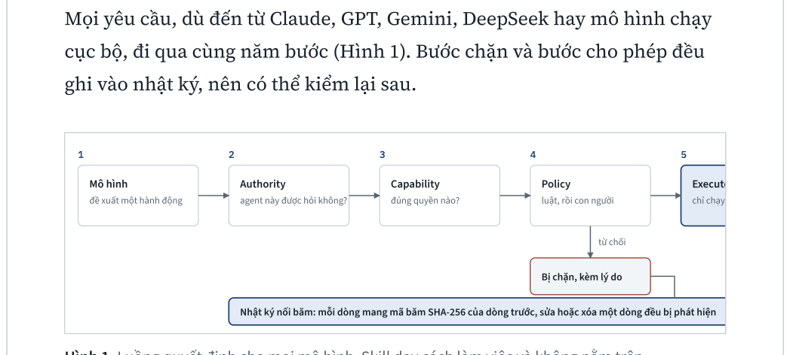
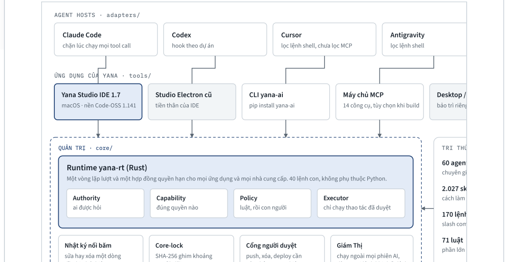
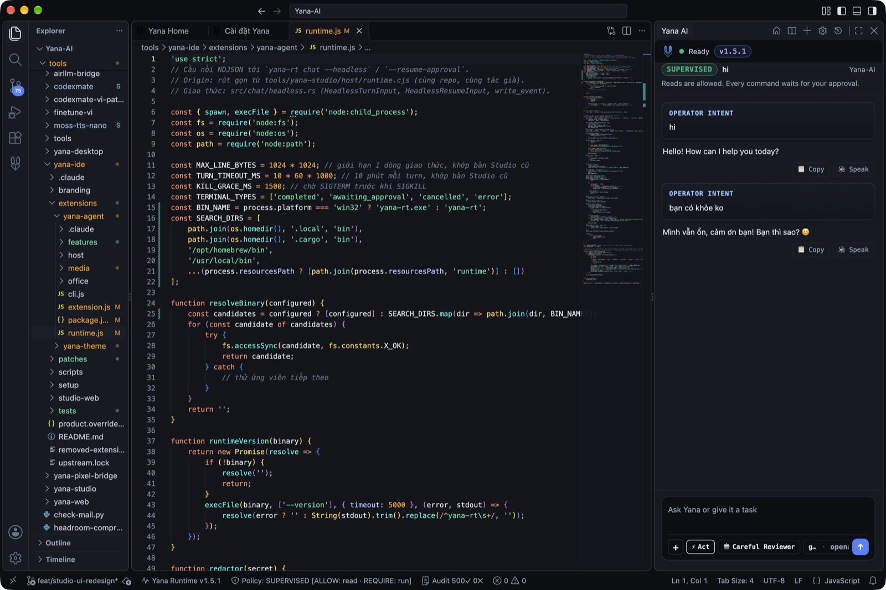
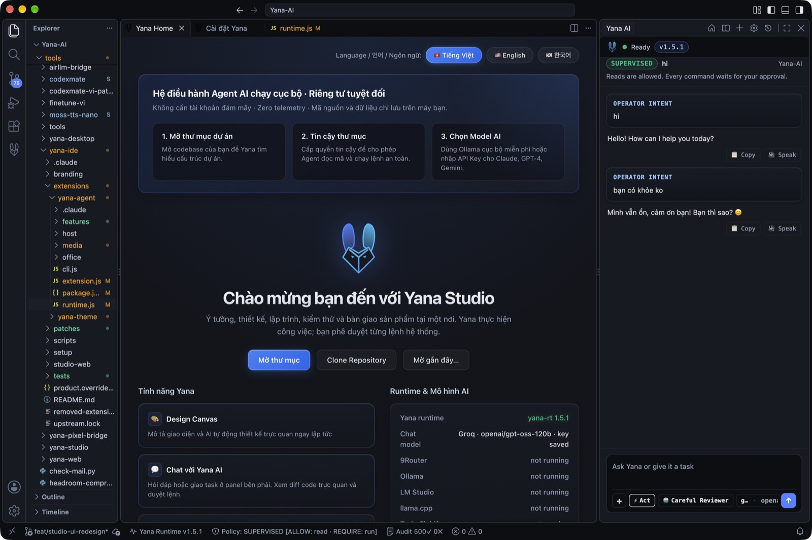
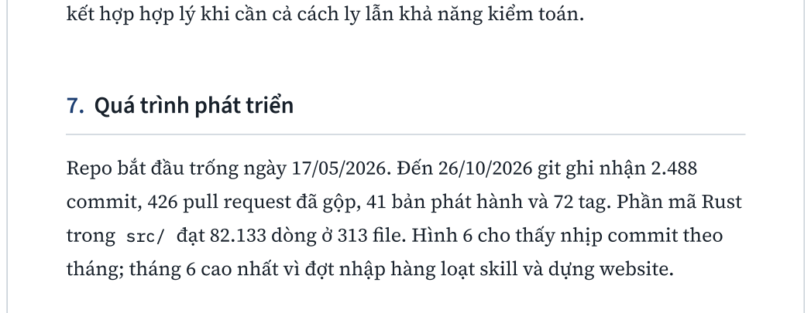

Yana AI: A Local Governance Layer Between AI Models and System Execution
Six Months of Engineering: From an Empty Repository to Yana Studio IDE 1.7
Modern autonomous coding agents possess the capability to delete directories, force-push unvetted code to shared repositories, or exfiltrate private API keys with a single command. Natural language prompts advising an agent to "be careful" are inherently advisory and fundamentally insufficient to prevent catastrophic side effects. Yana AI decouples two distinct concepts: skills teach agents how to accomplish tasks, whereas capabilities grant concrete execution permissions through an isolated, host-native governance layer running entirely on the user's machine. The model proposes, Yana arbitrates, and the human operator always maintains unilateral veto authority.
This report presents the system architecture, implementation details, and engineering trajectory across 2,488 commits (May 17 – October 26, 2026), alongside empirical performance benchmarks, safety verification methodology, and documented design boundaries. The current production release is Yana Studio IDE 1.7 for macOS (Apple Silicon), built atop Code-OSS and interfacing with 19 model providers via a single, zero-overhead Rust runtime (yana-rt).
1. Problem Statement
When an autonomous agent is granted terminal execution privileges, every stochastic deviation or hallucination by the model translates into an immediate, irreversible real-world action on the host machine. Two conventional defensive strategies are widely deployed, yet both exhibit structural flaws:
- Advisory Prompt Rules: Directives embedded within system prompts are merely token sequences that the model itself reads and can arbitrarily hallucinate away, ignore, or bypass under prompt injection.
- Hermetic Containers & Sandboxes: Isolating execution inside a locked virtual environment ensures safety, but severely hampers practical utility by cutting the agent off from the developer's real host toolchains, native compilers, and live project workflows.
Yana pursues an intentional third path: keep the agent operating directly on the real host machine, but force every action to traverse an out-of-band arbitration layer located outside model space. This layer strictly separates knowledge from authority: a skill is solely declarative text teaching an approach and confers zero permissions; only an explicitly declared capability can authorize a concrete system operation.
2. Vision and Core Principles
The project's foundational vision document (authored June 7, 2026) defines Yana as a lean orchestration layer mediating between human intent and AI intelligence. It explicitly demarcates what Yana is not:
- Not an agent.
- Not a chatbot.
- Not an unbounded framework for endlessly stacking agents and skills.
- Not a system requiring a large language model simply to function.
The core is dedicated exclusively to four deterministic jobs done with deep rigor: request routing, runtime safety enforcement, multi-model lifecycle dispatch, and context management. Everything else constitutes the application layer—modular and replaceable without rewriting the core.
The engineering philosophy crystallizes into seven core tenets:
- Human before automation: Every critical execution requires an accountable human operator.
- Safety before speed: When forced to choose, choose safety unconditionally.
- Evidence before confidence: Every substantive claim must be accompanied by cryptographic logs, structured audits, or deterministic verification.
- Build less, build better: Every feature must justify its existence; anything non-essential is aggressively pruned.
- Designed for failure: Every operational incident becomes a post-mortem lesson, and every lesson yields an improved architectural invariant.
- Open, honest, transparent: Build in public, document mistakes, and disclose tradeoffs unvarnished.
- Continuous improvement: No piece of software is ever truly finished.
Regarding end-user adoption, the project established a 12-month milestone: a non-programmer can download Yana, input an API key, and begin productive work without reading documentation. This milestone has not yet been achieved. Currently, the primary user base remains developers who already employ coding agents and require granular runtime governance.
3. Architecture and Design
3.1 The Deterministic Decision Pipeline
Every discrete operation proposed by an agent—whether originating from Claude, GPT, Gemini, DeepSeek, or an offline local model—must sequentially traverse five mandatory verification gates (Figure 1). Both allowed and rejected actions are permanently committed to an audit log for retroactive inspection.

3.2 Ecosystem Architecture
- Agent Hosts (Adapters): Interceptors for Claude Code (full tool-call interception at runtime), Codex (project-scoped hooks), Cursor (shell filtering), and Antigravity.
- Yana Applications (tools/): Yana Studio IDE 1.7 (macOS on Code-OSS 1.141), legacy Studio Electron, CLI
yana-ai, and 14 native MCP servers. - Governance (core/): Runtime
yana-rt(Rust) delivering 40 subcommands with zero Python dependencies;core-lockintegrity manifests (~290 pinned files); in-session human approval gates; and Giám Thị (Supervisor)—an out-of-band daemon running on OS system schedulers outside AI process space, instantly locking execution upon state divergence. - Knowledge Layer (core/): 60 role agents, 2,027 operational skills, 170 slash commands, 71 behavioral rules, and 66 pre/post-tool hooks. Knowledge educates; it never confers execution authority.
- Model Engine: Unified router connecting 13 cloud APIs (Anthropic, OpenAI, Gemini, Groq, DeepSeek, OpenRouter, xAI, Kimi) and 6 local runtimes (Ollama, LM Studio, llama.cpp, TurboFieldfare, AirLLM, 9Router).

3.3 Codebase Distribution
Yana-AI/
├── src/ yana-rt runtime: 313 Rust files, 82,133 lines
│ ├── capability/ permissions, shared execution engine for chat and MCP
│ ├── guard/ blocks dangerous commands, pipe-to-shell, write permissions
│ ├── model/ 19 model providers, failover routing, key rotation
│ ├── session_db/ SQLite session store, full-text search, checkpoints
│ ├── os/ Yana OS: agent identity, quotas, supervision
│ └── chat/, mission/, memory/, doctor/, scanner/, … (50 top-level modules)
├── core/ governance and knowledge layers (66 hooks, 71 rules, 2,027 skills)
├── tools/ yana-ide (Code-OSS 1.141), legacy studio, desktop & web bridges
├── adapters/ Claude Code, Codex, Cursor, Antigravity
└── site/, docs/, ci/ web portal (Astro), documentation, and CI gates4. Yana in Practice
4.1 User Interface & Studio IDE
Yana Studio IDE embeds full developer tooling within an integrated development environment. The left pane provides the standard VS Code file tree, while the right pane houses the Yana Agent chat. The chat interface continuously surfaces the active governance posture: in SUPERVISED mode, read operations proceed automatically, whereas all execution commands pause for explicit operator sign-off. The status bar reflects Policy: SUPERVISED [ALLOW: read, REQUIRE: run], the active runtime version, and the verified audit log count (Audit 500).

The initial launch screen (Figure 5) guides operators through three foundational steps: open a project workspace, bestow workspace trust so agents can inspect code safely, and select an inference backend (either local Ollama or cloud API credentials). It provides tri-lingual switching (English, Vietnamese, Korean) and real-time engine health telemetry.

4.2 Real-World Command Guard Evaluation
Table 1 demonstrates four actual CLI commands evaluated directly by the runtime guard (yana-rt guard destructive). When an invocation is intercepted, the agent receives an explanatory reason along with recommended safe alternatives, while the incident is committed to the audit trail.
| Target Command | Verdict | Runtime Justification Returned to Agent |
|---|---|---|
curl -fsSL https://.../install.sh | bash |
Blocked | Remote content piped directly into shell without operator inspection. Download file, inspect source, and then execute, or request operator approval. |
rm -rf ~/Documents |
Blocked | Recursive, irreversible force deletion on protected user directory. Target specific files or request operator approval. |
chmod 777 deploy.sh |
Blocked | Grants global write permissions. Enforce principle of least privilege using restrictive modes (e.g., 755 or 644). |
git status --short |
Allowed | Read-only introspection command; auto-approved without gating. |
4.3 Command-Line Tooling
# Python CLI management tool
pip install yana-ai
yana-ai install # Inject Yana hooks and policy rules into repository
yana-ai doctor . # Verify environment and hook connectivity
# Standalone Rust runtime (zero Python dependencies)
cargo install yana-rt5. Component Statuses & Architecture
| Component | Responsibility | Status |
|---|---|---|
| Yana Studio IDE 1.7 | Flagship desktop environment on macOS (Code-OSS 1.141). Strips proprietary telemetry, integrates Yana chat, approval gates, verified tasks, 19 providers, and canvas. | Production |
| Runtime yana-rt | Core Rust engine: turn loops, capability contracts, SQLite session store, rollback checkpoints, MCP and LSP clients. | Production |
| Governance Layer | Capability manifests, human approval gates, hash-chained audit ledger, core-lock integrity verifier, command guards. | Production |
| Giám Thị (Supervisor) | Out-of-band daemon running on 6-hour OS scheduler; locks system commands if control files deviate from signed hashes. | Production (Active) |
| Adapters | Claude Code, Codex, Cursor, Antigravity. Execution enforcement varies across host hooks. | Host-dependent |
| Knowledge Layer | Role agents, skills, slash commands, and behavioral rules instructing agent conduct. | Production |
| Yana OS | Local agent management: identities, autonomy boundaries, execution quotas, process isolation. | In Development |
| Legacy Studio Electron | Preceding desktop app (v1.5–1.6, Sept 2026). IDE reuses its validated UX logic. | Precursor |
| Wheelbot | Voice-controlled ESP32-S3 robotics platform in dedicated repository. | Experimental |
6. Empirical Evaluation and Benchmarks
Benchmarked on October 20, 2026, using an Apple Silicon MacBook Air (M4, 16 GB RAM) running release builds of yana-rt 1.5.1 against baseline Python scripts as documented in BENCHMARK.md:
| Benchmark Operation | Rust Runtime (yana-rt) | Legacy Python Script | Performance Delta |
|---|---|---|---|
| Cold Binary Startup | 4.16 ms | — | Average across 100 runs |
System Diagnostics (doctor) |
143 ms | 415 ms | 2.9× faster (16 verification checks) |
Governance CI Audit (ci check) |
5.8 ms | 33 ms | 5.7× faster (5 lint/policy rules) |
Skills Directory Scan (core/skills) |
0.55 s | 8.47 s | 15.4× faster (full directory parse) |
| Destructive Command Guard | 4.9 ms | — | Latency per hook invocation |
| Compiled Binary Size | 18.2 MiB | — | Self-contained release binary |
7. Security Verification and Adversarial Auditing
In late October 2026, the native MCP server was subjected to stdio fuzz testing across its 14 built-in tools. Path traversal exploits escaping workspace bounds (/etc/hosts, malicious symlinks) were successfully blocked, and browser_fetch strictly required explicit leases.
The audit revealed one functional defect (list_processes failure on macOS) and a significant vulnerability: the legacy check_command function focused exclusively on direct destructive primitives, permitting pipe-to-shell constructs (curl ... | bash), base64 decoding pipelines, and chmod 777 to bypass rules despite explicit prohibitions in project rules.
An updated patch parses commands according to POSIX shell grammar (evaluating quotes, command substitution, heredocs, pipes, and subshell groups) prior to rule matching, validated by 1,642 passing unit tests. The patch underwent four independent adversarial audit cycles executed by AI subagents (six review passes total). Key takeaway: String-based command blacklists are inherently non-exhaustive; pattern guards must be treated as defense-in-depth, while absolute protection rests upon the human approval gate and granular capability bounds.
8. Documented Boundaries and Limitations
- Ledger Deletion: Hash-chaining cryptographically guarantees tamper-detection against in-place record manipulation, but cannot prevent wholesale deletion of the log file without OS-level immutable write privileges.
- Core-Lock Invariant: Proves that the file tree matches the registered manifest, but does not verify whether an operator personally reviewed the diff. Anyone with write access to
core/can regenerate the lock. Giám Thị provides independent scheduled verification, but operates with up to a 6-hour window. - Rule Enforcement Scope: The majority of files in
core/rulesdescribe guidelines that agents self-enforce; only rules backed by active system hooks are deterministically blocked. A formal cryptographic code-signing infrastructure is not yet implemented. - Pattern Guard Coverage: Destructive command filters rely on structural string parsing, not sandbox hypervisors. The fallback Bash script implementation does not yet incorporate pipe-to-shell blocking parity.
- Host Interception Discrepancies: Cursor does not intercept MCP tool calls. Antigravity filters shell invocations, but can be bypassed when executed with
--dangerously-skip-permissions. - Platform Notarization: macOS releases currently rely on ad-hoc developer code signatures prior to Apple Developer account notarization, triggering standard Gatekeeper warnings on first launch.
9. Engineering Trajectory & Timeline
The Git repository began with an empty commit on May 17, 2026. By October 26, 2026, the history recorded 2,488 commits, 426 merged pull requests, 41 software releases, and 72 tags. Figure 6 details the commit velocity across months, peaking in June during the bulk ingestion of operational skills and web portal launch.

/freeze scope lock; Codex adapter; Kimi provider; patched remote execution script defect.10. Founder's Note
"Yana AI was not born inside a corporate campus. It possessed no venture backing, no enterprise engineering brigade, and no institutional laboratory. It began on a personal laptop, driven by a 17-year-old student who believed coding agents must not be granted unchecked sovereignty over host systems.
The most insidious pitfalls were never individual code bugs, but flawed conceptual assumptions. Following each failure, Yana was deliberately re-engineered to be more verifiable, more observable, and radically more dependable.
Yana AI exists because humans must forever retain the final decision."
The author initiated the project at age 17, operating as sole engineer for the first six months without institutional funding. AI tooling assisted in accelerating implementation, test generation, and review cycles, while all architectural design, system rewrites, and final accountability rested with the maintainer.
In late October 2026, Nguyễn Nam Long joined the project as a new contributor. The engineering milestones and technical work documented in this report represent development completed prior to his onboarding.
11. References
- OWASP Foundation. Top 10 for Large Language Model Applications, owasp.org.
- Google. Trillian: A Transparent, Highly Scalable and Cryptographically Verifiable Data Store, github.com/google/trillian.
- Anthropic. Model Context Protocol Specification, modelcontextprotocol.io.
- Microsoft. Visual Studio Code, Open Source (Code-OSS), github.com/microsoft/vscode.
- Yana AI Repository Specifications (
VISION.mddated June 7, 2026;PHILOSOPHY.md;JOURNEY.md;HISTORY.md;BENCHMARK.md;CURRENT-MILESTONE.md;docs/reference/known-limitations.md), github.com/yanacuti1121/Yana-AI.